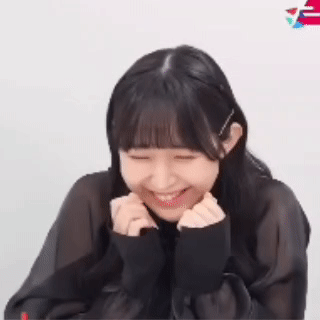
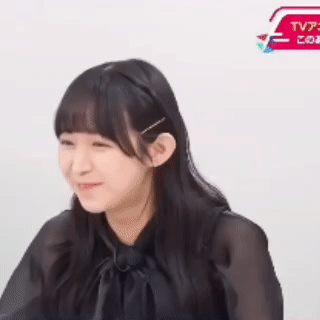
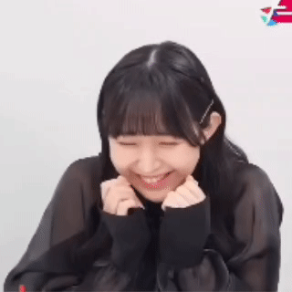
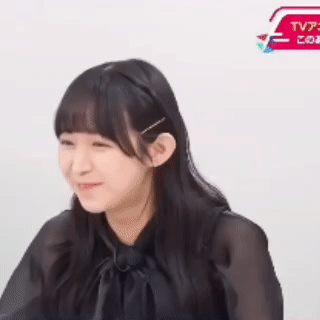

- 出生日: 2000年3月26日
- 星座: 白羊座
- 年龄: 25岁
- 身高: 154cm
- 出身地区: 日本奈良县
- 所属公司: 青二事务所
- 昵称: みやたん、羊宫ちゃん、小羊、羊妃
- 八木野土香《SELECTION PROJECT》
- 乾心寿《更衣人偶坠入爱河》
- 御影樱子《即使如此依旧步步进逼》
- 蕾妮·席昂《转生王女与天才千金的魔法革命》
- 山田杏奈《我心里危险的东西》
- 高松灯《BanG Dream!》
- 小佐内由纪《小市民系列》
- 资格·执照：剑道初段
- 兴趣：描画、读书、看
怪诞电影、听音乐、原声吉他、作词、作曲 - 在乐队排练的时候会提前到录音室吃早饭。自曝会吃掉两份牛舌加两份鸡胗。还会在队友正在调整乐器的时候悄悄进食。
- 幼儿园至小学时期时常会因为莫名其妙的问题把自己关在厕所里打不开门。
- 在笑的时候会不经意把手捂在嘴上。也因此诞生了很多奇怪的表情包www
 



『体が使えなくなってしまうまで、役と一緒に生きたい。』
"想和角色一起活下去，直到身体不能动为止。"
——A&G NEXT STEP 羊宫妃那のHOOOOPE 第1回
- 出生日: 2000年1月5日
- 星座: 摩羯座
- 年龄: 25岁
- 身高: 150cm
- 出身地区: 日本宫城县
- 所属公司: 响HiBiKi
- 昵称: ひなちゃん、ひなぴよ、圣青木
代表角色：
- 高千穗史黛拉
——《少女☆歌剧 Revue Starlight -Re LIVE-》 - 要乐奈《BanG Dream!》
- 特技是钢琴和唱歌。
- 兴趣是吉他、独奏、一个人唱卡拉OK、看Live。
- 喜欢的食物是肉和寿司。
- 音乐能力了得，在少女歌剧舞台剧中演唱过歌剧选段《夜后咏叹调》。具有一定程度的“绝对音感”，可以作曲并自弹自唱
- 隐形酒鬼() 详见: 【中切】恭喜你发现响社的隐藏酒鬼&野比大雄
『楽奈ちゃんは、私の人生の鍵人物になったよね。』
"我想，小乐奈成为了我人生中的关键人物呢。"
——『VOICE Febri』Vol.1 青木阳菜访谈部分
出生日: 2000年3月14日
星座: 双鱼座
年龄: 25岁
身高: 156cm
出身地区: 日本千叶县南房总市
所属公司: S
昵称: 蜜柑（みかん）、ミカロン
代表角色：
- 长崎爽世《BanG Dream!》
- 特长：低音单簧管、料理。
- 兴趣：跳舞、乐器、蜜瓜包。蜜瓜包中毒症晚期患者(笑)

- 资格：调理师免许。
- 以前就非常喜欢BanG Dream!，并以此为契机开始弹贝斯。Poppin'Party的贝斯手西本里美是其憧憬和尊敬对象
- 是个小哭包，经常在节目的最后忍不住泪洒现场
『自分が担当しているキャラクターヘの愛は誰にも負けない気持ちでいます！』
"对自己饰演的角色的爱，我是不会输给任何人的！"
——声優グランプリ 2025年1月号
出生日: 2001年7月10日
星座: 巨蟹座
年龄: 23岁
身高: 151cm
出身地区: 日本大阪府
所属公司: 响HiBiKi
昵称：りんちゃん、りんちゃろ、lsl、李世林、凛跌
代表角色：
- 千早爱音《BanG Dream!》
- 兴趣：视频制作、拼图、观看YouTube、游戏、搞笑......
- 不会游泳、不擅长英语、不擅长读汉字、不擅长拍照
- 会玩RPG、动作类游戏和FPS游戏。
- 在BanG Dream! TV LIVE上称最近得到治愈的方法是观看电竞比赛。为了看直播以至于早上四点起床，此举使MyGO!!!!!的队友们十分不解
- 尤其喜爱无畏契约，曾去现场观看过2023无畏契约东京大师赛。
『私のお芝居とは関係なく愛音ちゃんを愛してくださったのがすごく嬉しかったです。』
"大家不是因为我的演技才喜欢爱音，而是真心喜欢她本人，这真的让我很开心。"
——LisAni！连载访谈："迷子たち"の音楽を徹底特集 第6回
出生日: 2002年5月15日
星座: 金牛座
年龄: 22岁
身高: 157cm
出身地区: 日本静冈县滨松市
所属公司: 自由身
昵称: ここちゃん、Coco's/Cocos、林妹妹、大鼓队员
代表角色：
- 速志步《Wake Up, Girls! 新章》
- 桃山未来《美妙☆频道》
- 优木雪菜《LoveLive!虹咲学园学园偶像同好会》(2023年4月1日–)
- 椎名立希《BanG Dream!》
- 兴趣：插画、看音乐剧
- 特技：鼓、各种打击乐、钢琴。
- 是首位同时担任LoveLive!系列主役和BanG Dream!系列主役的声优。真正的拉邦结派之人
- 体力劳模...【中字】大鼓队员 fmt巡演上表演了108首的超人
『だから、ライブのことを「自分の居場所だなぁ」と思うんですよね。』
"所以我觉得，LIVE演出才是'我真正的归属'啊。"
——『リスパレ！チョイス』MyGO!!!!!专访